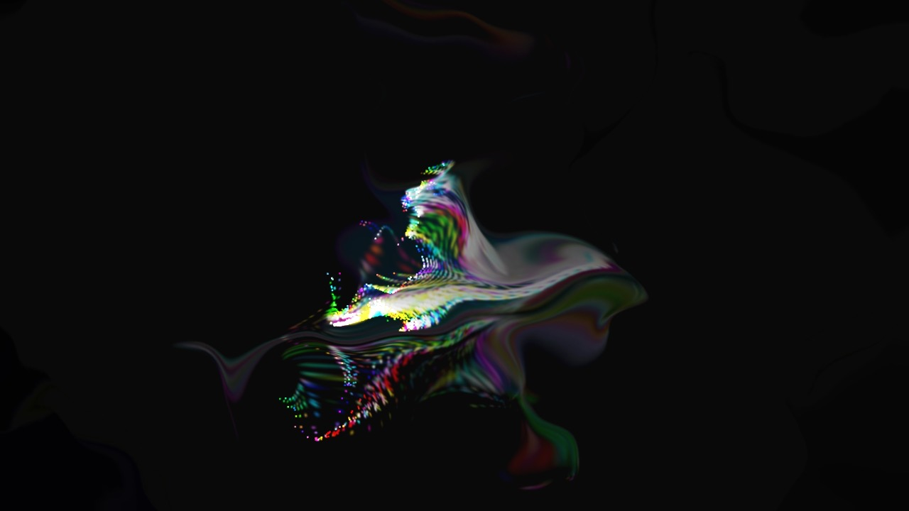
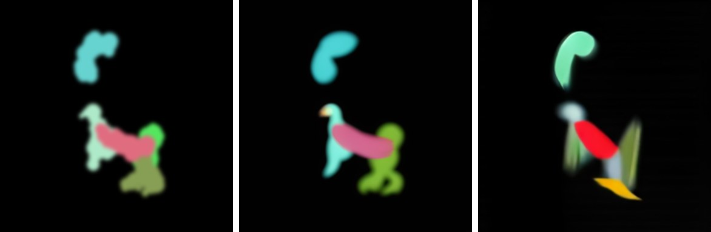
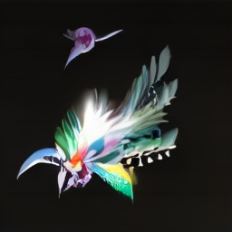
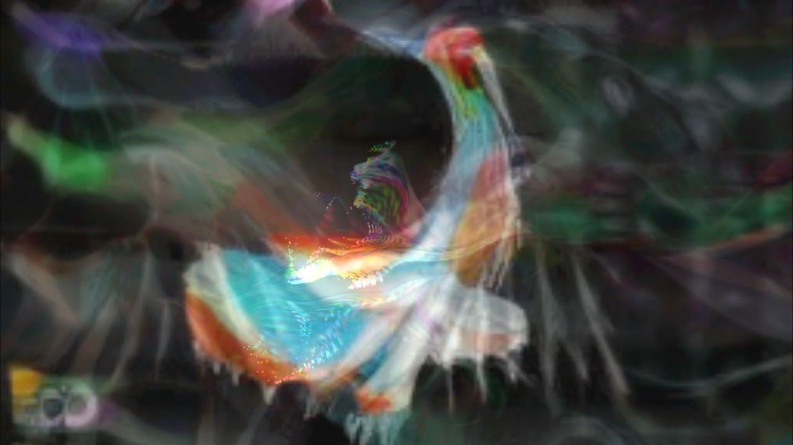

A clip on r/TouchDesigner
The starting point was a short screen recording posted to r/TouchDesigner: someone waving their hands at a webcam while glowing trails follow their fingers, and those trails turn, continuously, into birds.
The clip shows three layers working at once. Hand tracking puts dots on each finger. A particle system (TouchDesigner's POPs) paints colour-cycling trails wherever the fingertips go. Then StreamDiffusion, a way of running Stable Diffusion fast enough for live video, redraws each frame of those trails as birds. The birds keep up with the hands. That last part is what makes it read as an effect rather than a slideshow, and it depends on an NVIDIA graphics card.
The same three layers, on a Mac
The first two layers were straightforward and work well. The third is the subject of the rest of this page.

Two ways of getting a faster GPU, neither finished
Since the M1 can't run StreamDiffusion at speed, the first plan was to borrow someone else's graphics card.
Daydream Scope's cloud mode
Daydream Scope is a desktop app that runs live video diffusion either locally or on Daydream's servers, and it accepts video from TouchDesigner over Syphon. It installed, signed in, and then failed to connect: after sign-in it contacts signer.daydream.live, and that address no longer resolves anywhere. The app's latest release (v0.2.5, May 2026) still points at it, and the project has been quiet since July. The cloud side appears to be gone.
Renting an NVIDIA card
The fallback was to rent an RTX 4090 by the hour on RunPod and run StreamDiffusion's own demo there. The Mac half was set up: the trails went out over Syphon into OBS, OBS turned them into a virtual webcam, and a browser would send that to the rented machine. It stopped at deploying the pod. Accounts, credit, an install script against a repository last updated in 2024, a virtual camera, a screen grab to bring the result back: too much machinery for what was meant to be a quick effect.
What an M1 actually manages
Before building the local version, SD-Turbo was benchmarked on its own on this machine, with nothing else running.
| Size | Full decoder | Tiny decoder (TAESD) |
|---|---|---|
| 512px | 0.37 fps · 2.7 s | 0.94 fps · 1.1 s |
| 384px | 0.68 fps · 1.5 s | 1.58 fps · 0.6 s |
| 256px | 1.44 fps · 0.7 s | 2.73 fps · 0.37 s |
Inside the real setup, sharing the GPU with hand tracking, particles and feedback, it ran at 0.9 images a second at 320px and about 1.05 at 256px. Cutting the particle birth rate from 2,500 to 1,000 a second changed nothing, so the particles weren't the bottleneck. The hand-tracking model and full-resolution compositing take the rest.
For comparison, StreamDiffusion's own README reports about 94 fps for the same kind of one-step SD-Turbo img2img on an RTX 4090 with TensorRT. That's roughly ninety times what this laptop delivers in practice.

Why it looks bad


Each of these problems would be survivable alone. Together they make the effect unusable.
- It doesn't follow you. At one image a second, plus the hop through a folder, plus a crossfade that takes about a second to settle, a bird appears one to two seconds after the movement that caused it. The connection between your hand and the image, which is the whole point, is lost.
- The crossfade makes mud. Each AI frame is generated from scratch, so consecutive images are two unrelated birds. Blending between them doesn't produce motion. It produces double exposures, visible in the composite above as overlapping half-birds.
- Too few pixels. A 256px square is stretched five times to fill a 1280×720 frame, and its top and bottom are cropped off to fit the wide shape. Whatever detail the model drew is gone.
- The model only half-commits. One denoising step is all the M1 can afford. At that budget, strength trades directly between keeping the trails and drawing birds, and every setting in between gives fragments: a beak here, a wing there.
- The input is wrong for it. The feedback loop fills the frame with drifting smoke. The model reads that haze as part of the picture and paints it in, which is a big part of the murk. The reference clip appears to feed it cleaner strokes on black.
- It flickers. A fixed random seed keeps the style steady, but small changes in the input still swing the output from frame to frame. At one frame a second that reads as jumping rather than flicker, and the crossfade can only soften it.
The short version: live diffusion is a frame-rate problem first and an image-quality problem second. Below about ten images a second, every workaround (crossfading, lower resolution, lighter models) trades one kind of ugliness for another.
Where the line is
- An NVIDIA GPU. StreamDiffusion's speed comes from CUDA and TensorRT, which Macs don't have. An RTX 3060 (12 GB) is roughly the entry point; a 4070 or 3090 is comfortable; a 4090 is what the reference clip implies. These are estimates from published benchmarks, not tested here.
- Or a faster Mac, partly. An M4 Max GPU is perhaps five or six times an M1's. That would make this smoother but still well short of the clip.
- Temporal coherence. StreamDiffusion skips frames that barely change, and newer video-diffusion models carry information between frames. Without one of those, even a fast GPU gives flickering birds.
- Cleaner input. Strokes on black, no feedback haze, so the model has something definite to reshape.
- Or no diffusion at all. The motion-driven half is the part that works. Windrow, the study before this one, does the motion with no model at all: a field of grass that moves with your hands, in the browser, at full frame rate.
How a quick effect became two days
The request was a quick generative effect. It took two days, and most of that went into infrastructure rather than the effect: a 180 MB tracking plugin, a desktop app whose cloud had vanished, an OBS virtual camera, a GPU-rental setup sheet, a 3.6 GB local model install, and a disk too full to hold it until it was cleaned out.
The lesson is ordering. The first thing to establish was the frame rate the model could actually reach on this hardware. It's one benchmark that takes ten minutes, and its answer (about one image a second) would have set expectations before any of the pipeline was built. Benchmark first, then build.